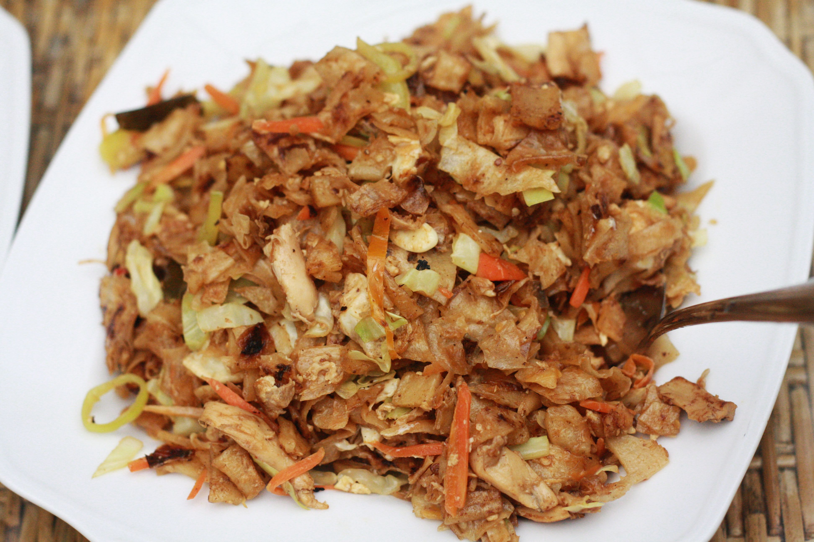

Kottu

The mac burger in Sri Lanka
Kottu rotti is a very famous(probably the most famous)
dish in Sri Lanka. It's made with a lot of ingredients
like flour, vegetables, eggs and meat. It's normally
eaten with a curry. Cheese Kottu is an exception though.
If you ever go to Sri Lanka, this is a must try plate.
Ingredients
- 2 tbsp of vegetable oil
- 1/2 medium onion
- 1 tbsp minced garlic
- peppers
- 1 cup of sliced leeks
- 1/4 of a cabbage
- 2 heaped cups of shredded chicken
- 1/2 cup curry sauce
- a cup of grated carrots
- 3 eggs
- 1 cup shredded cheese (optional)
- Salt
- 1lb chopped Godhamba Roti
Instructions
- Heat the vegetable oil over medium-high heat
- Add the onion and saute until softened.
- Add ginger and garlic and saute for a few seconds.
- Add all the vegetables(except for carrots) and a generous pinch of
salt and stir for a few minutes.
- Add chicken, pepper and curry sauce and stir-fry until the vegetables
just starting to soften.
- Add the carrots and mix them in. Whisk the eggs together in a bowl,
and season with a pinch of salt. Create a well in the middle of the
mixture and add the eggs into the well. Let the eggs cook while
scrambling them. When the eggs are almost cooked mix it with the
vegetables and chicken.
- Taste and season with salt.
- If making cheese Kottu then this is the chance to add the shredded
cheese and mix.
- Add the shredded roti, and mix through the vegetables and chicken.
Mix frequently until the shredded roti is completely coated with all
the spices and curry sauce. Cook for about 5 minutes.
- Serve while hot with extra curry!